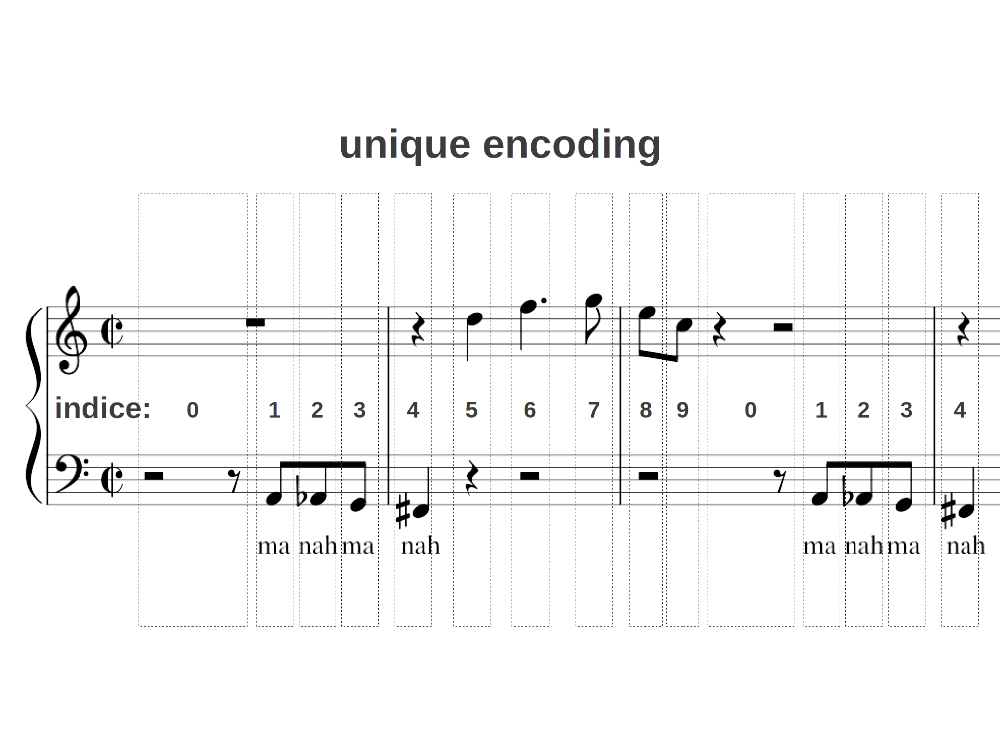

Embeddings module¶
-
class
Embeddings.Midster(filename, minimidi=128)¶ Bases:
objectTakes MIDI filename an Input and generates fresh representation e.g.:
- pianoroll
- timeroll
- CSV
- MIDI
This class embedds a MIDI file into a Tensor with dimension pitch and duration of a tone as sequence.
Every midster is unique. There is no compatible training with different input. The unique embedding allows no compatibility in my state of praxis.
details explained below.
-
COLUMNS= ['track', 'time', 'event', 'channel', 'pitch', 'velocity']¶ After converting MIDI to CSV we obtain the columns above.
-
_clear_events()¶ Remove all events that are not “note_on/off”
-
_colsort(df)¶ Sort the columns of a dataframe with standard column names in standart form
Parameters: df – pd.dataframe Returns: standard sorted pd.dataframe
-
_midi_head_foot()¶ Get standard head and foot for midi compatibility
Returns: pd.dataframe with midi compatibility
-
_read_csv()¶ Read CSV file corresponding to filename and folder structure
Returns: pandas dataframe with all information from csv
-
get_timeroll(data=None, id_code=None)¶ Push Timeroll into pianoroll
Parameters: - data – data encoding defined in
get_unique - id_code – reference encoding defined in
get_unique - border – gives capability of scaling data down with efficient throw away politics
Returns: - data – data encoding defined in
-
push_timeroll(timeroll, elem, _elem)¶ Push new timeroll inside Midster and update pianoroll acordingly.
Parameters: - timeroll – timeroll to be pushed inside respecting
get_uniqueencoding - elem –
get_uniqueencoding - _elem –
get_uniqueencoding
- timeroll – timeroll to be pushed inside respecting
-
update()¶ Update CSV and pianoroll representation.
-
update_pianoroll()¶ Update/Create piano roll from information provided by Midster.

-
class
Embeddings.Preprocessing(data)¶ Bases:
objectProviding an bijective map for preprocessing data in general form. i.e. zerocenter and normalize as well as.
Assuming positive values.
-
decode(y)¶ preprocessed to unprocessed
-
encode(x)¶ unprocessed to preprocessed
-
-
Embeddings.embedding(t, k, s, keep_dims=False)¶ Stride through a tensor t with a kernel of size k and stride s. Get corresponding dimension embedding matrix.

Parameters: - t – tensor, np.array
- k – kernel size, list(int)
- s – kernel stride, list(int)
- keep_dims – wheather or not to ravel embedding, bool
Returns: embedded tensor representation, np.array, with first dimension representing time or order of the sliding.
Note: that the order doesn’t imply that the output sequence calculated one timestep after an other.
-
Embeddings.unique_embedding(data)¶ Convert abstractions into unique representation of every combination of possible classmembers. e.g. Convert music scores into number representation, word embeddings.
Todo
unique length same as here, in the timeroll encoding.
Parameters: border – gives capability of scaling data down with efficient throw away politics Returns: - data: np array representing unique vectors of the pianoroll timesteps
- elem: encoding into indices for the data provided as reference

{kind=link}
{kind=link}